ELF: Embedded Language Flows
A Continuous Diffusion Language Model
Keya Hu*, Linlu Qiu*, Yiyang Lu, Hanhong Zhao,
MIT
Code: github.com/lillian039/ELF
Part I
Background & Motivation
Why diffusion language models? Why continuous ones?
Diffusion & flow models
The generative models of choice for images, video, audio , …
This success has driven growing interest in extending diffusion to language .
Diffusion and flow models are the de facto choice for continuous data — images, video, audio, 3D. Iterative refinement gives high quality and fine-grained control. Their success has driven growing interest in bringing diffusion to language.
Two families of diffusion language models
Discrete DLMs: diffuse directly on tokens (mask / categorical kernels)
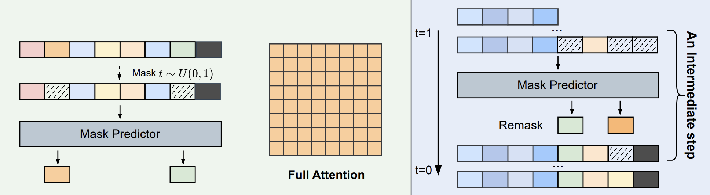
Continuous DLMs: map tokens to continuous embeddings, then denoise
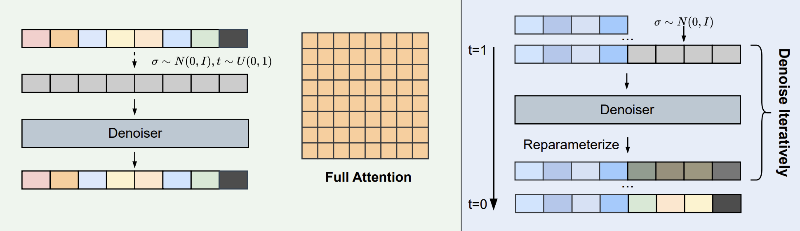
Figures from Li et al., A Survey on Diffusion Language Models
Two families, shown side by side. Discrete DLMs (top) operate directly on tokens: tokens are corrupted to [MASK] or via a categorical kernel, and a mask predictor iteratively unmasks them. Continuous DLMs (bottom) map tokens to continuous embeddings, add Gaussian noise, and a denoiser iteratively denoises — exactly like image diffusion. Same transformer backbone with full attention; the difference is whether diffusion happens over discrete tokens or continuous vectors.
Most existing DLMs are discrete
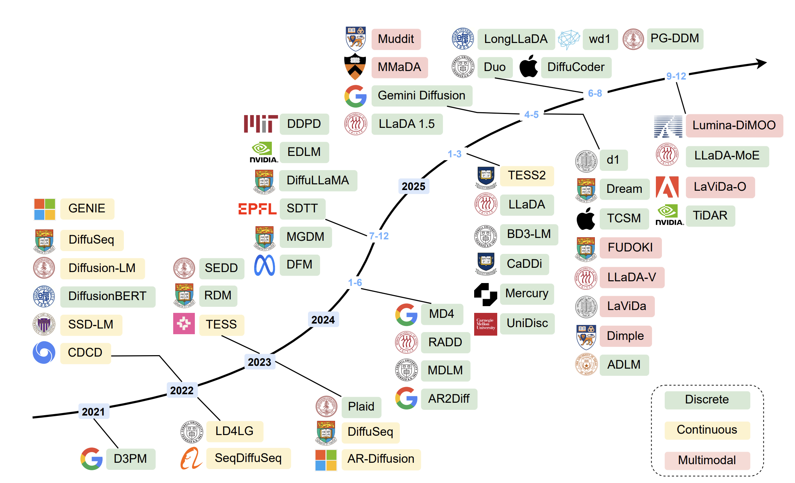
Is the performance gap of continuous DLMs due to the inherently discrete nature of language modeling , or to underexplored algorithmic design choices ?
See also: Li et al., A Survey on Diffusion Language Models .
This timeline shows the landscape of diffusion language models. The vast majority of recent work — especially in the last year — is discrete. Continuous DLMs are fewer, mostly earlier, and have historically underperformed. That sets up the central question of this work: is the gap because language is inherently discrete, or because the continuous design space is underexplored? ELF is our answer — it's a design problem.
Part II
The ELF Method
Denoise in a continuous embedding space, in continuous time,
The high-level idea
ELF denoises primarily in a continuous embedding space , only at the final step .
continuous embedding space (not discrete tokens)continuous time via Flow Matching
The high-level idea. ELF leverages the iterative nature of flow models to denoise primarily in a continuous embedding space, converting back to discrete tokens only at the very last step. ELF is continuous in two senses: first, the state is a continuous embedding space rather than discrete tokens; second, time is continuous — we use Flow Matching rather than the discrete-time or per-step categorical updates of discrete DLMs. Together these let us reuse the image-diffusion toolkit directly.
Training pipeline
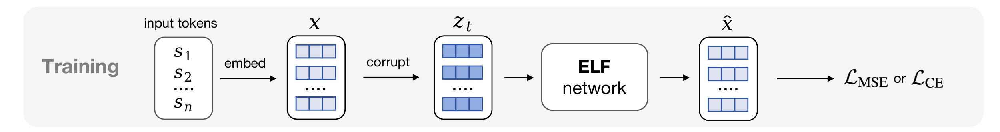
Three components:
① Discrete tokens → continuous embeddings② Flow Matching on the embeddings③ Back to discrete tokens
The training pipeline at a glance. We embed discrete tokens into clean continuous embeddings x, corrupt them to z_t, and the ELF network predicts the clean x-hat — trained with the MSE denoising loss, or a cross-entropy decode loss at the final step. This decomposes into the three components I'll walk through: one, tokens to continuous embeddings; two, Flow Matching in that space; three, decoding back to discrete tokens at t equals one.
① Tokens → continuous embeddings
Map the token sequence s = [s1 , …, sL ] to embeddings with a frozen pretrained T5 encoder :
x = T5-Enc(s)
Other choices are also possible: non-contextual word embeddings, Gaussian embeddings, one-hot encodings, etc.
Component one: map discrete tokens to continuous representations. We tokenize the sentence and, by default, run a frozen pretrained T5 encoder for bidirectional contextual embeddings — so each token's target depends on the whole sentence. The encoder is used only at training time, so there is no inference overhead. The choice is flexible; we also study jointly-trained and randomized embeddings in the ablations.
Flow Matching formulation
Linear path from noise to data:
zt = t · x + (1 − t) · ε, t ∈ [0, 1]
x ~ pdata (clean data) · ε ~ 𝒩(0, I) (Gaussian noise)
Flow velocity along the path:
v = dzt /dt = x − ε
Predict any of {x, ε, v}; the others follow. E.g. , if the network outputs x:
xθ = netθ (zt , t)
zt = t · xθ + (1 − t) · εθ
vθ = xθ − εθ
A brief Flow Matching primer before we apply it to embeddings. Flow Matching defines a linear path between data x and noise epsilon: at time t, the sample z_t is a linear interpolation. The flow velocity is the time derivative, which equals x minus epsilon. The key property, captured by Eq. 5 of Back to Basics: x, epsilon, and v are interconvertible given z_t and t — the network can predict any one and the others follow. ELF picks x-prediction with the v-loss, as we will see next.
② Flow Matching on the embeddings
Among {x, ε, v}, ELF uses x-prediction : the network outputs the clean embedding.
Reparametrize to recover ε and v from xθ
εθ = (zt − t · xθ ) / (1 − t)
vθ = (xθ − zt ) / (1 − t)
Train with the Flow Matching v-loss :
ℒMSE = 𝔼 ‖ vθ − v ‖² = 𝔼 (1 − t)−2 ‖ xθ − x ‖²
Component two: apply Flow Matching in the embedding space. Among the three equivalent targets, ELF picks x-prediction: the network outputs the clean embedding x-hat directly, following recent image-generation work. From x-hat we recover epsilon-theta and v-theta using the two reparameterization equations on the slide — both are direct algebraic consequences of z_t equals t x plus one-minus-t epsilon. Once we have v-theta, training is the standard Flow Matching v-loss, equivalent to a (1 minus t) to the negative two weighted MSE on the x-prediction. We use x-prediction because it stays stable at high embedding dimension and aligns with the decoding target, enabling shared weights with the decoder; we find v-prediction breaks that weight sharing.
③ Back to discrete tokens (only at t = 1)
At the final step , decode embeddings → tokens with a learnable unembedding W :
ℒCE = 𝔼z̃ [ CrossEnt(W · xθ (z̃), s) ]
x-prediction already outputs clean embeddings → the final step is just decoding.No separate decoder : same network, switched by a learnable mode token.
As t → 1, zt → x. We use a per-token corruption z̃ to create a nontrivial training input.
Component three: getting back to discrete tokens. Because the output is discrete, at the final time step t equals one we decode embeddings to tokens — with no separate decoder. The same network does it, sharing weights with the denoiser, signaled by a learnable binary mode token: denoise below t=1, decode at t=1; in a single batch we mix roughly 80% denoise and 20% decode samples. One subtlety: as t approaches 1, z_t approaches the clean x, so the input becomes trivial; we inject a per-token corruption z-tilde to create a nontrivial training input, then apply a learnable unembedding W with cross-entropy. This weight reuse is exactly what x-prediction enables.
Two corruption modes
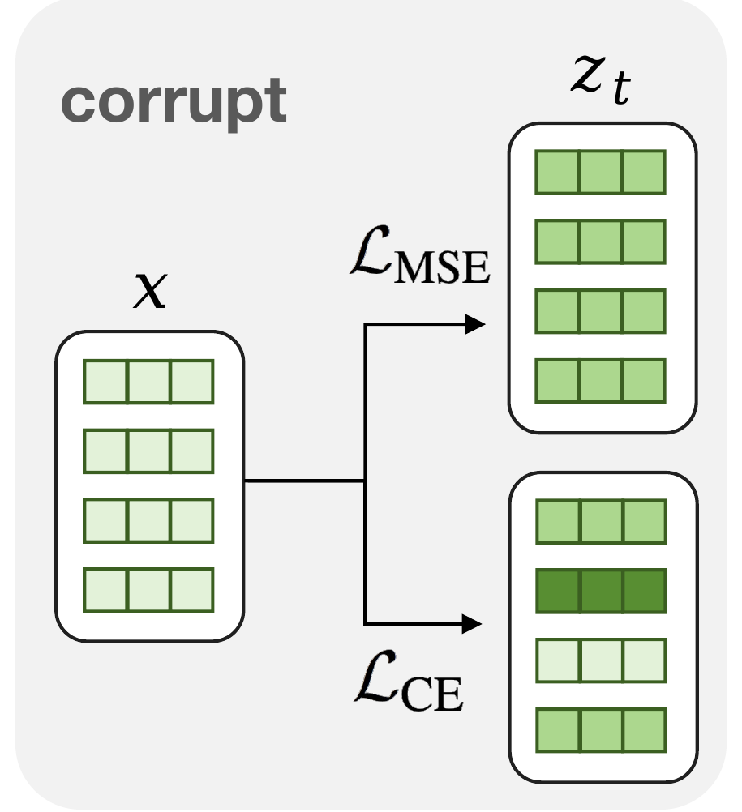
Denoise (ℒMSE ) : Flow Matching noise zt = t · x + (1 − t) · εDecode (ℒCE , t = 1) : per-token corruption z̃ → decoder recovers from imperfect context
How the corruption step works. The denoise branch uses standard rectified-flow noise: a linear interpolation between the clean embedding x and Gaussian noise epsilon, uniform across tokens. The decode branch is at t equals one, where z_t would equal x and the input would be trivial. We sidestep this by injecting a per-token corruption z-tilde: each token is corrupted by a different amount, giving the decoder a meaningful task to recover the clean token from imperfect surrounding context. This is what makes the final-step discretization robust to denoiser errors at inference.
Why x-prediction?
Effective on high-dimensional representations
Same target for denoising and decoding → denoiser & decoder can share weights
Why predict x rather than the velocity directly? Two reasons, which we back up empirically later. First, x-prediction stays stable at high embedding dimension, where v- and epsilon-prediction degrade. Second, predicting clean embeddings is the same target as decoding clean tokens at the final step — exactly what lets the denoiser and the decoder share weights. We find v-prediction breaks that weight sharing.
Inference pipeline
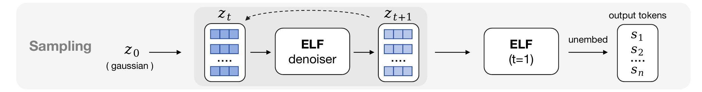
Start from Gaussian noise z0
Iteratively denoise : solve the ODE dz/dt = vθ
Final step : switch to decode → unembed → tokens
Inference mirrors training. Start from Gaussian noise and iteratively denoise the embeddings by solving the flow ODE with an Euler solver; the dashed arrow is self-conditioning, carrying the previous prediction forward. Only at the final step do we switch the network to decode mode, unembed, and argmax to tokens. Besides the ODE we also support an SDE-inspired sampler that injects small noise each step; we compare them in the ablations.
Pseudocode
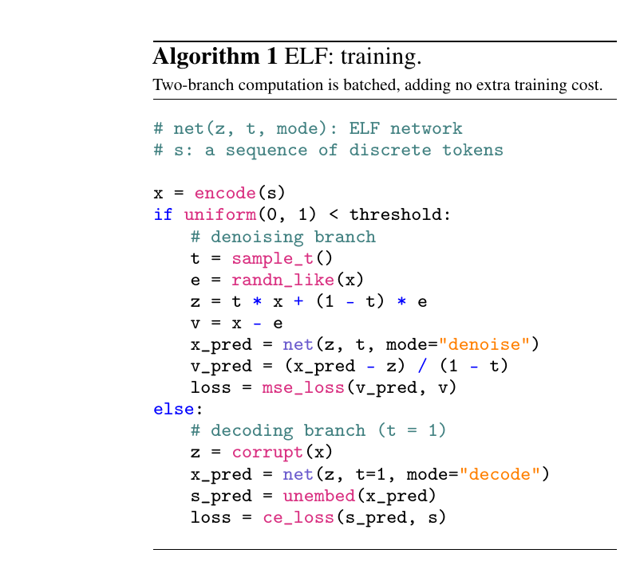
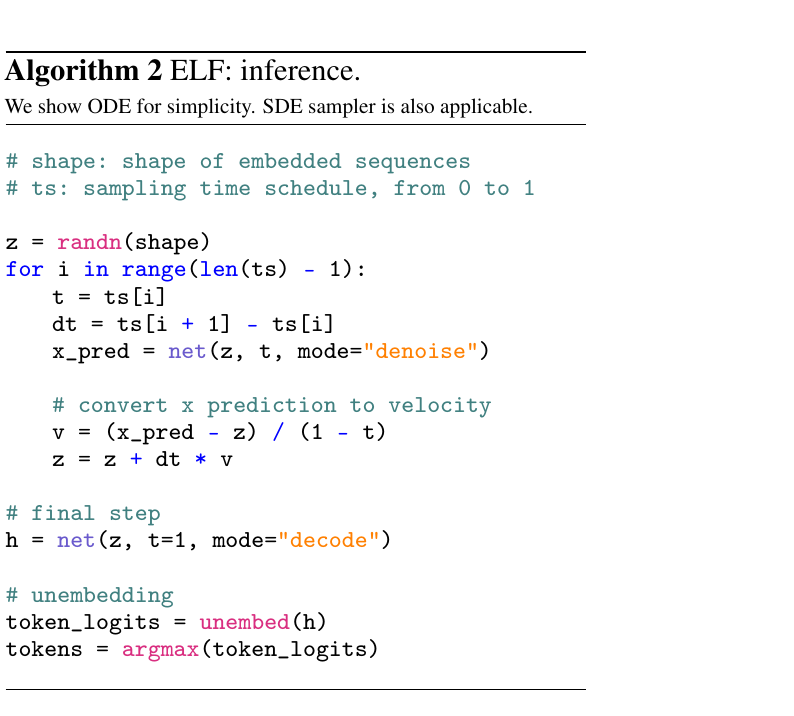
Conditioning & guidance
Classifier-free guidance (CFG) steers generation and trades off quality vs diversity
vcfg (zt | c) = ω · v(zt | c) + (1 − ω) · v(zt | ∅)
CFG combines continuous quantities → applies directly to ELF
No class labels → CFG signal comes from self-conditioning
Before the mechanics, why conditioning and guidance? Steering generation is central: conditioning on a prompt, and trading off sample quality against diversity. In image diffusion, classifier-free guidance, CFG, is the dominant tool for both. The key point for ELF: CFG is defined on continuous quantities like the velocity or score field, so it applies directly to us, a concrete payoff of staying continuous. In discrete DLMs, CFG is awkward and has been shown less effective. One catch: we have no class labels, so we need a conditioning signal; we get it from self-conditioning, which is already standard in DLMs, so CFG adds only marginal overhead. The next two slides cover self-conditioning, then CFG.
Self-conditioning
Conditioning on the model's own previous prediction:
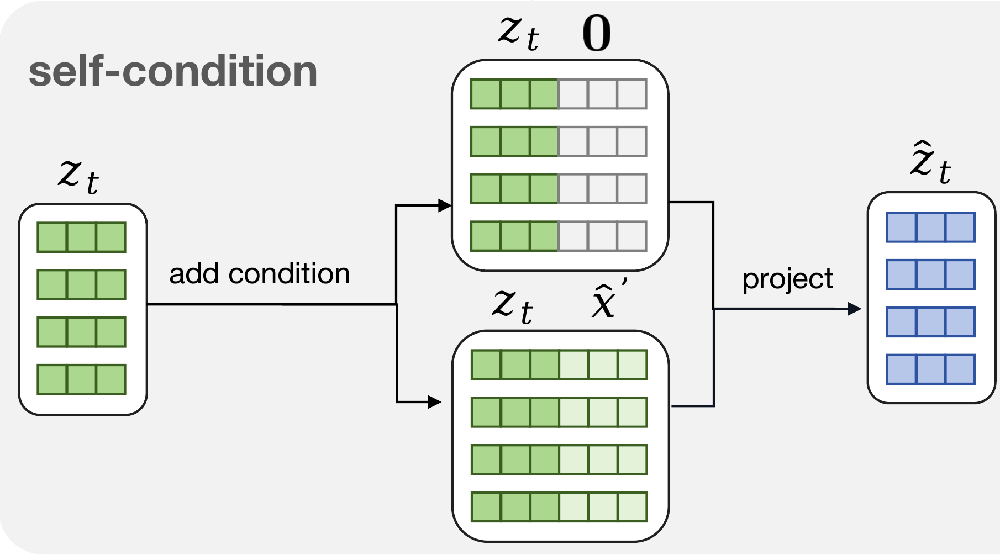
Use the real x̂' with prob 50%, else a null 0
No extra forward pass at inference
Self-conditioning is standard in DLMs. As the figure shows, we concatenate the noisy z_t with the model's own previous prediction x-hat-prime and project back down; during training we use the real prediction half the time and a null zero otherwise. At inference it conditions on the previous step, so there is no extra forward pass. It also doubles as the conditioning signal for CFG.
Problem: standard CFG doubles inference cost
Inference-time CFG combines conditional and unconditional fields per step:
vcfg (zt | x̂') = ω · vθ (zt | x̂') + (1 − ω) · vθ (zt | 0 )
With self-conditioning as the CFG signal, each step needs:
one forward pass conditioned on x̂' (previous prediction)
one forward pass conditioned on 0 (null)
2× forward passes per step → 2× NFE at inference.
Can we get CFG for free at inference? → training-time CFG .
If we use standard inference-time CFG with self-conditioning as the conditioning signal, each sampling step requires two forward passes — one with the real previous prediction x-hat-prime, one with the null zero — and we linearly combine them with the CFG weight omega. That doubles the number of function evaluations at inference, which defeats the few-step advantage. The next slide shows ELF's training-time CFG, which folds the guidance into a single forward pass.
Training-time CFG
Network uses the guided velocity vcfg as target directly:
vtarget = (x − ε) + (1 − 1/ω) · [ vcfg θ (zt | c, ω) − vcfg θ (zt | ∅, ω) ]
Trade off quality vs diversity : vary ω at inferenceControl tokens : CFG scale ω is an in-context token, no extra NFE
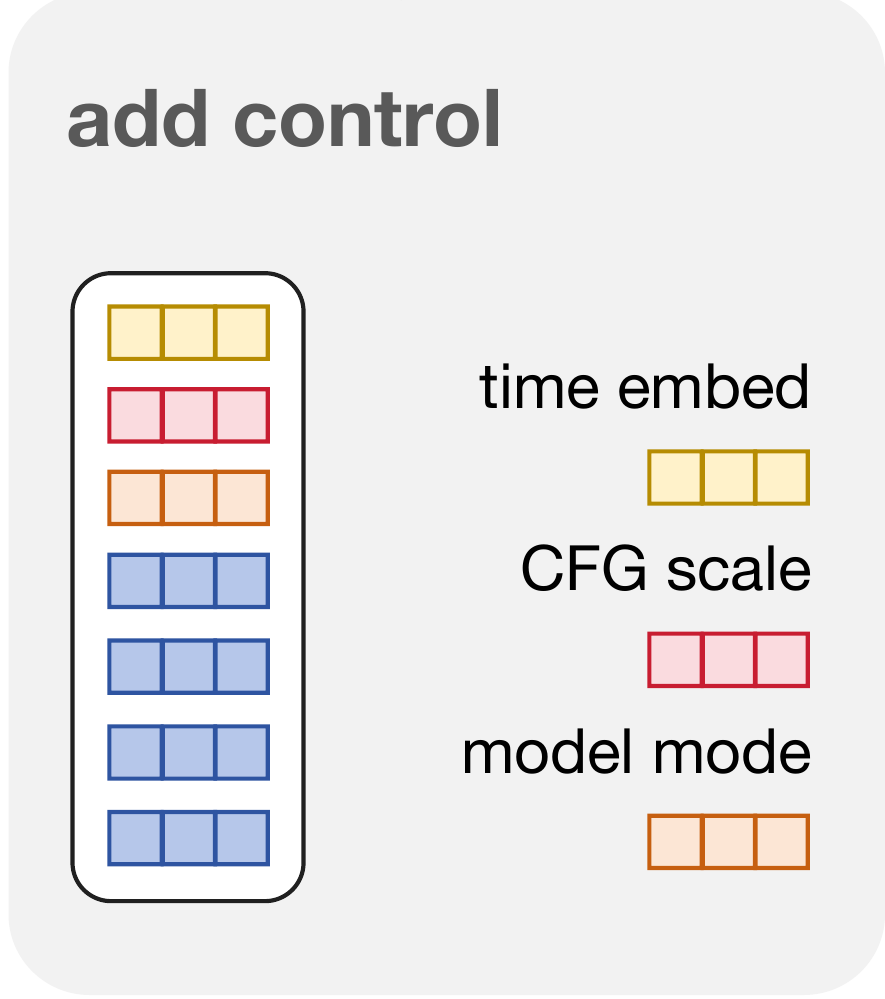
In training-time CFG, the network directly models the post-combination guided velocity rather than combining two passes at inference. The regression target is Equation 3 from the appendix: the standard velocity x minus epsilon, plus a guidance correction scaled by one minus one-over-omega. Two things to emphasize. First, the CFG scale omega is supplied as an in-context control token, shown on the right alongside the time and model-mode tokens, so changing omega needs no extra forward pass, no extra NFE. Second, varying omega at inference directly trades off generation quality against diversity.
Extending to conditional generation
Prepend clean (uncorrupted) condition embeddings as a prefix (e.g., translation source, article to summarize); only the target is noised.
condition (clean)
target (noisy zt )
uncorrupted throughout
training & inference
denoised by ELF
Inference: combine conditional & unconditional fields via inference-time CFG .
For conditional tasks like translation or summarization, we prepend the clean condition embeddings to the noisy target embeddings. The condition stays uncorrupted both during training and at inference; only the target portion is noised and denoised by ELF. With bidirectional self-attention, the target tokens attend to the clean condition tokens. At inference we apply standard inference-time CFG (combining conditional and unconditional predictions) to control how strongly the model follows the condition.
Part III
Experiments
Unconditional generation → conditional generation
Setup: unconditional generation
Data & evaluation
OpenWebText (~9B tokens), packed to L = 1024.
Metrics :
Gen. PPL ↓ : 1000 samples under GPT-2 LargeEntropy ↑ : unigram entropy
Model
Default ELF-B (105M).
Embeddings from a frozen pretrained T5 encoder
Setup. We evaluate unconditional generation on OpenWebText, packed to length 1024, reporting generative perplexity under GPT-2 Large for quality and unigram entropy for diversity; we sweep CFG to chart the full curve, not a single point. The model is our 105-million-parameter default, ELF-B, with embeddings from a frozen pretrained T5 encoder used only at training time, so it adds no inference cost. Larger sizes come later under scaling.
System-level comparison
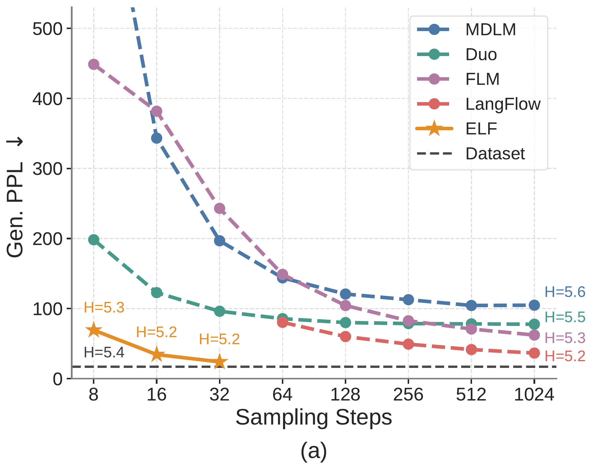
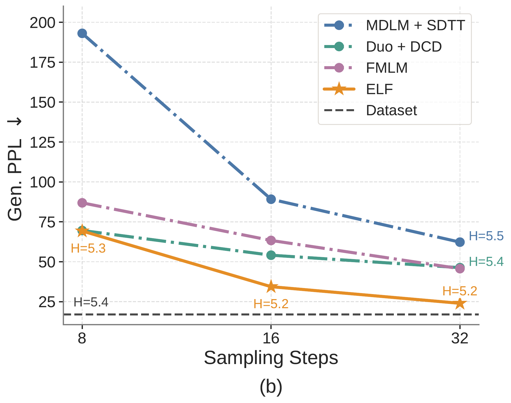
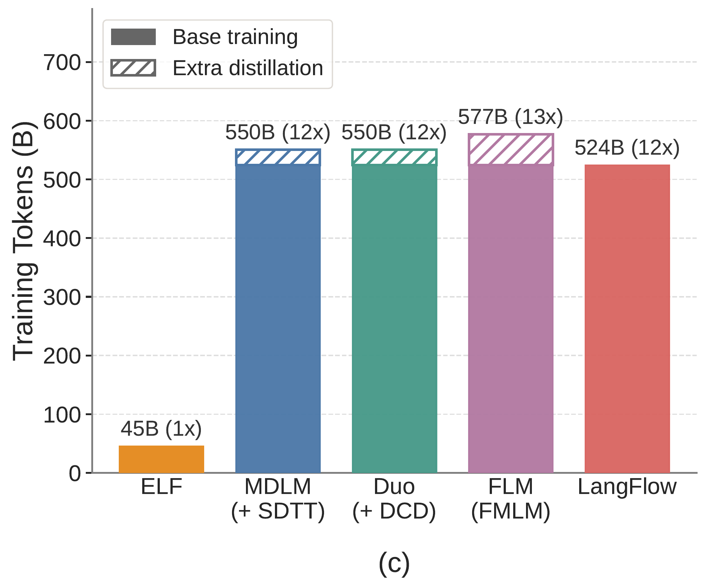
Strong performance , even without distillation , and with 10× fewer training tokens .
Here is the headline. Panel (a): ELF reaches strong generative perplexity in few sampling steps, vs both discrete and continuous DLMs trained under similar settings. Click — panel (b): ELF rivals distilled baselines that require extra rounds of training, even without any distillation. Click — panel (c): and it does so with about ten times fewer training tokens than the baselines.
CFG sweep: a curve, not a point
The CFG scale trades off quality vs diversity .
Higher CFG → lower Gen. PPL (better quality)
Higher CFG → lower entropy (less diverse)
Sweep CFG to trace the full PPL ↔ entropy frontier
Every ablation reports a curve , not a single point.
Before the ablations, one concept: the CFG sweep. The CFG scale trades off quality versus diversity. Higher CFG lowers generative perplexity but also lowers entropy. By sweeping CFG from low to high, we trace out the full quality-diversity frontier. So every ablation that follows reports a curve, not a single number. The preferred direction is the lower-right corner: low PPL, high entropy.
Ablating ELF's three design choices
① Embedding choices : frozen pretrained T5 vs alternatives② Decoding strategies : shared-weight vs separate denoiser / decoder③ Samplers : SDE-inspired vs ODE
Each reports the Gen. PPL / entropy curve (default ELF-B).
Now we ablate the three design choices that define ELF, in the same order as the method: the encoder that produces the embeddings, the shared-weight denoiser-decoder, and the sampler. For each we compare against the natural alternative.
① Embedding choices:
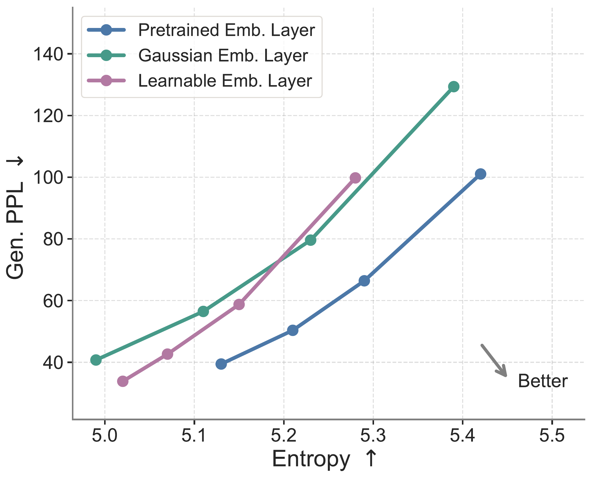
① Embedding choices:
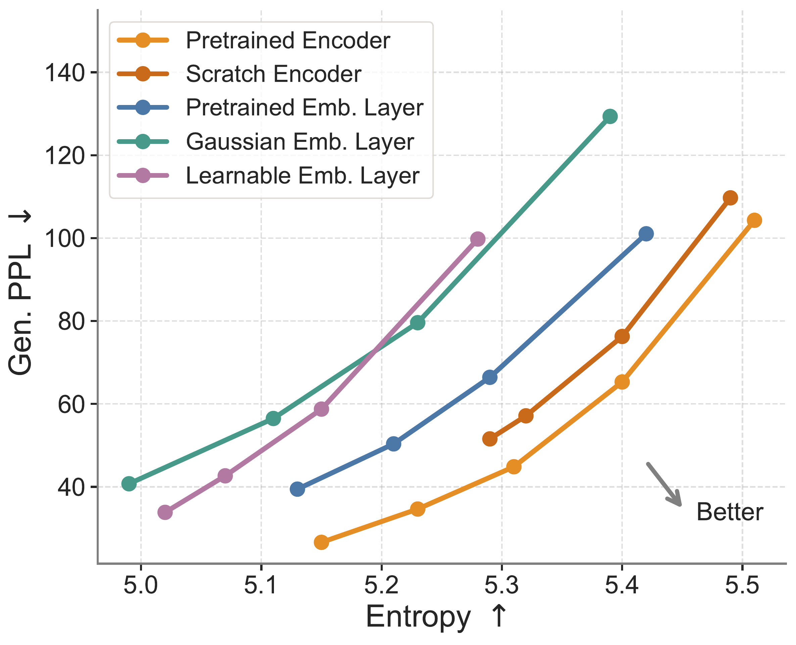
Encoder ablation. Pretrained contextual T5 embeddings are clearly best. A from-scratch encoder is close but lags. A learnable embedding layer collapses, because jointly optimizing the embedding space with the flow is hard.
② Decoding strategies:
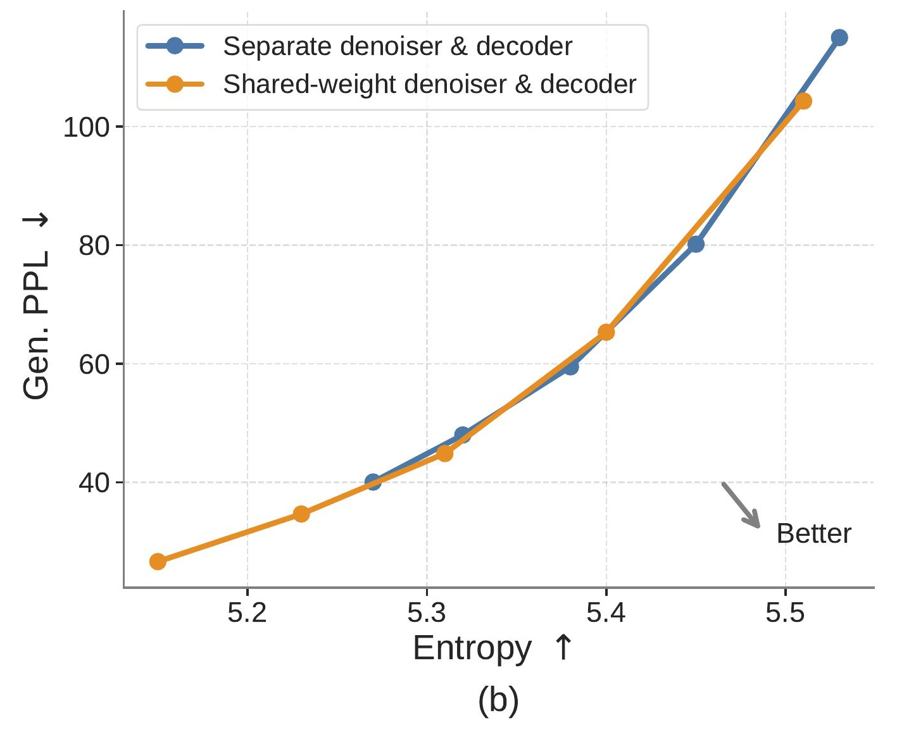
Weight-sharing ablation. The alternative trains a separate decoder first, freezes it, then trains the denoiser. The two match in the mid-range, but the shared-weight design extends further into the low-perplexity regime, and it is a single training pipeline rather than two stages.
SDE-inspired sampler: re-inject noise each step
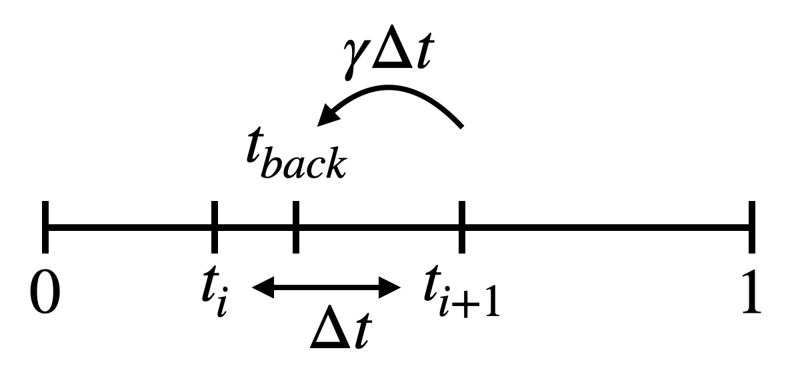
At each step, jump back by γ · Δt to tback , re-inject Gaussian noise, then advance to ti+2 .
γ controls the stochasticity (γ = 0 ⇒ deterministic ODE).
A picture before the code. Suppose we are at time t_i and want to advance to t_{i+1}. The SDE-inspired sampler first jumps back in time by gamma times delta t to t_back, re-injects a fresh Gaussian noise scaled to match, then runs the denoiser at that perturbed state and advances to t_{i+1}. The hyperparameter gamma controls how much stochasticity we add. Gamma = 0 leaves no jump back and recovers the deterministic ODE Euler step.
SDE-inspired sampler: re-inject noise each step
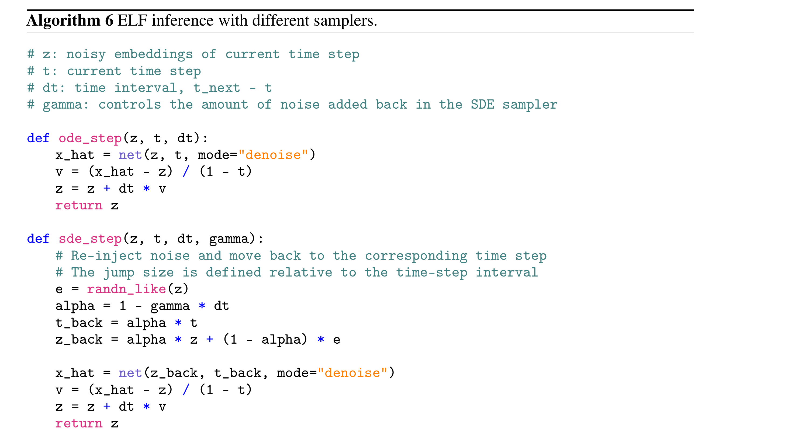
γ = 0 ⇒ deterministic ODE step ·
γ > 0 ⇒ jump back in time, re-inject Gaussian noise, then take the velocity step.
Before the ablation, the SDE sampler in code. Each step we jump back in time by a fraction gamma times dt, re-inject Gaussian noise scaled to match, then run the denoiser at the perturbed state and advance. Gamma zero recovers a deterministic ODE Euler step; gamma greater than zero adds stochasticity that helps correct accumulated denoising errors.
③ Samplers: SDE vs ODE
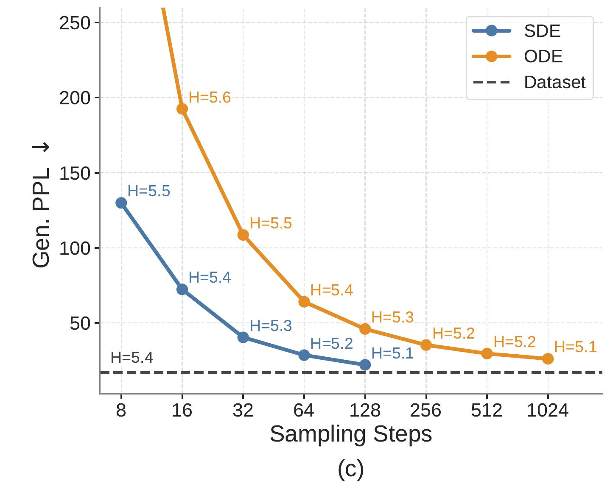
The SDE-inspired sampler re-injects noise each step to reduce error accumulation.
Sampler ablation. The SDE-inspired sampler beats the deterministic ODE, especially with few steps, because re-injecting stochastic noise corrects errors that accumulate along the trajectory.
Model scaling
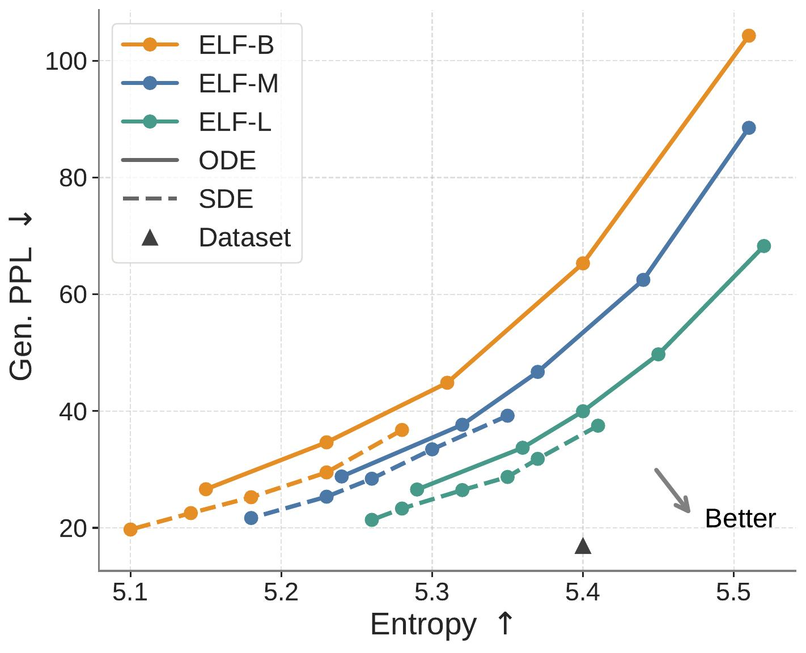
Three sizes: 105M / 342M / 652M
Scaling holds. Larger ELF models push the PPL / entropy frontier in the expected direction.
Operating in high-dim embedding space
Why x-prediction?
Prediction target : x-prediction stable at 512 / 768 / 1024-d; v / ε degrade.Bottleneck dimension : project 512 → 128 → hidden size; matches low-dim data manifold.
Two more ablations that justify our high-dimensional embedding choice. First, prediction target: as embedding dimension grows from 512 to 1024, only x-prediction stays stable; v- and epsilon-prediction degrade. Second, the bottleneck: projecting through a 128-dim bottleneck before the transformer matches the low-dim data manifold and outperforms both very small (32-d) and full-dim (512-d) variants.
Prediction target at higher dim
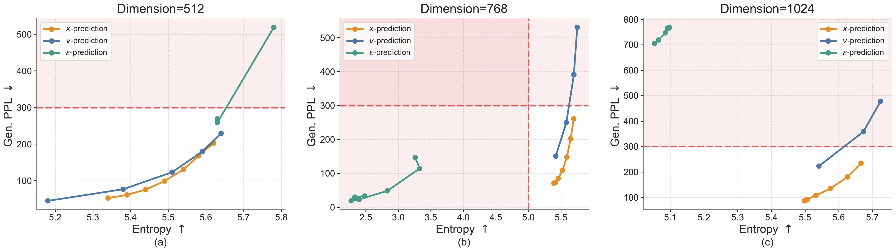
x-prediction stable across 512 / 768 / 1024-d; v-prediction degrades; ε collapses.
Prediction target ablation in detail. We sweep three encoder sizes giving 512, 768, and 1024-dimensional embeddings. x-prediction is stable across all three. v-prediction is fine at 512 but degrades at 768 and 1024. Epsilon-prediction collapses across the board. This is consistent with the RAE finding that clean data lies on a low-dim manifold in high-dim embedding space — predicting the clean data is the right target.
Bottleneck dimension
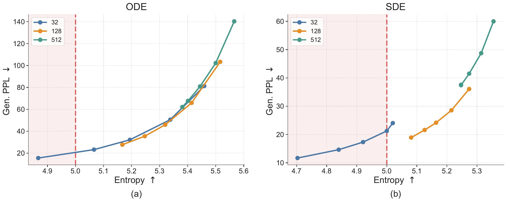
128-d bottleneck is the sweet spot: better than 32-d (too lossy) or 512-d (full encoder dim).
Bottleneck dimension ablation. We compare 32, 128, and 512. 128 gives the best PPL-entropy frontier. 32 is too lossy and reduces diversity. 512 — keeping the full encoder dimension — hurts perplexity. Again consistent with a low-dim manifold within the high-dim embedding.
Conditional generation
Prepend the clean (uncorrupted) condition embeddings , then generate the target.
WMT14 De → En (translation)
L = 128 (64 condition + 64 target).
Metric: BLEU ↑ .
XSum
L = 1088 (1024 condition + 64 target).
Metric: ROUGE-1 / 2 / L ↑ .
For conditional tasks we prepend the clean, uncorrupted condition embeddings and generate the target under bidirectional attention. Translation is WMT14 German to English, scored by BLEU; summarization is XSum, scored by ROUGE.
Conditional generation results
Model Size De-En XSum BLEU ↑ R-1 ↑ R-2 ↑ R-L ↑
MDLM 99M 18.4 33.4 11.6 25.8 Duo 170M 21.3 31.4 10.1 25.0 E2D2 99M 24.8 28.4 8.3 22.0 SeqDiffuSeq — 21.3 19.3 1.7 14.1 CDCD — 24.9 — — — ELF-B (ours) 105M 26.4 36.0 12.2 27.8
Conditional results. ELF-B is best on every metric, beating both discrete and continuous baselines on translation and summarization. Best config: 64-step ODE, inference-time CFG = 2 on the prefix, self-conditioning CFG = 1.
Denoising trajectory: qualitative
Manually decoding intermediate embeddings: as t goes 0 → 1, ungrammatical text refines to fluent sentences.
The denoising trajectory: structure emerges first, then word-level detail.
Qualitative examples
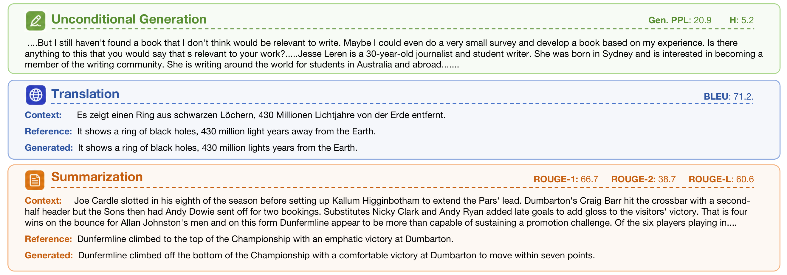
Samples from ELF-B on OpenWebText, WMT14 De → En, and XSum.
Qualitative examples across all three tasks. Top: unconditional generation from OWT. Middle: a German-to-English translation with the source, reference, and ELF generation. Bottom: an XSum article with the reference summary and ELF summary. ELF generally follows the input context and produces semantically aligned outputs.
What's new in ELF?
Many prior works require per-step discretization (e.g., per-step CE loss). ELF does it only at the last step → maximal flexibility for the flow dynamics.
Unlike prior latent diffusion , ELF needs no extra decoder .
ELF uses a Flow Matching formulation (continuous embedding , continuous time ); benefits from recent advances in image & video generation.
Full survey: paper Appendix A.
Three differences from prior continuous diffusion language models. First, most prior work imposes some form of per-step token-level supervision, like per-step cross-entropy, which keeps tying the trajectory back to discrete tokens. ELF only discretizes at the final step, leaving the flow dynamics maximally flexible. Second, unlike latent diffusion approaches like LD4LG, ELF does not train a separate encoder for a latent space; the T5 encoder is frozen and pretrained. Third, ELF uses the Flow Matching formulation: continuous embedding space and continuous time, in contrast to DDPM-style or per-step categorical models.
Future work
Embedding choices: we use frozen pretrained T5 encoder; stronger encoders likely help.Scaling: largest run is ELF-L (652M); behavior at LLM scale is open.Distillation on top of ELF: push few-step generation further.
Limitations include likelihood eval, encoder choice, scale, distillation, and hardware port.
Take-aways
ELF: continuous diffusion language model based on continuous-time Flow Matching
Keep the flow continuous until the last step .
Predict the clean embedding .
Share weights between denoiser and decoder.
Natural adaption of continuous-domain techniques (e.g., CFG).
Result: better generation quality, fewer steps, fewer tokens, no distillation.
The take-away: the gap of continuous DLMs was a design problem, not a fundamental limitation.
Thank you!
Continuous DLMs are a promising path
Code: github.com/lillian039/ELF
Denoising mode probability
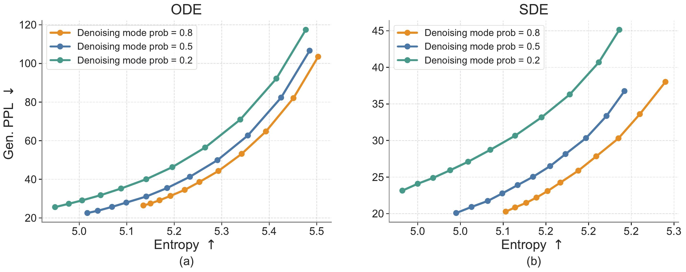
80% denoise / 20% decode performs effectively. Too little denoising hurts flow dynamics.
80/20 split between denoising and decoding works best.
In-context vs adaLN conditioning
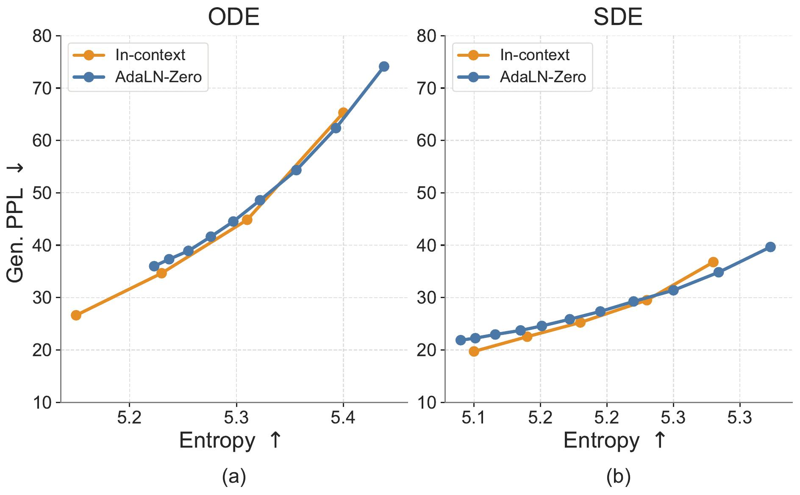
In-context (prepend control tokens) ≥ adaLN-Zero. 105M params.
In-context conditioning beats adaLN-Zero and saves parameters.
CFG on conditional generation
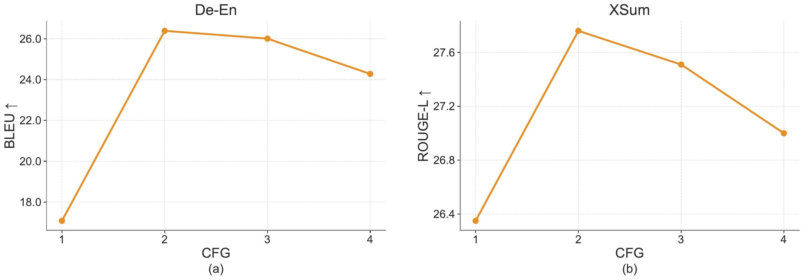
CFG ≈ 2 optimal on both WMT14 and XSum. Too high hurts.
Moderate guidance helps a lot on conditional tasks; too much hurts.
Time schedule & SDE noise scale
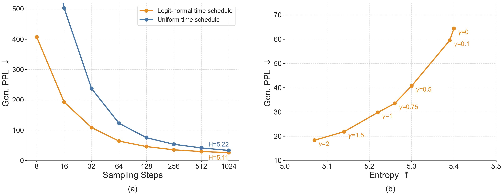
(a) Logit-normal schedule > uniform, especially in few-step regime.
(b) SDE re-injection scale γ trades PPL for entropy. γ = 1.0 default.
Two sampler choices. Logit-normal schedule and γ=1 are defaults.
Optimizer (Muon vs AdamW)
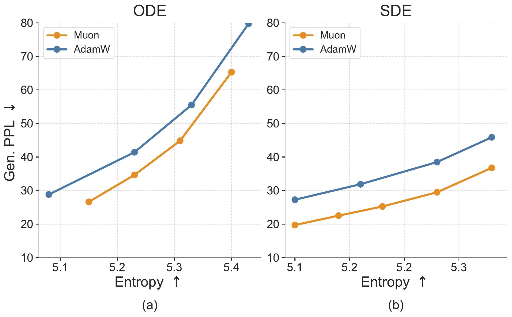
Muon wins, especially under SDE sampling. Note: AdamW still beats baselines.
Muon gives the best results, but ELF's gains aren't purely an optimizer artifact — AdamW still beats baselines.